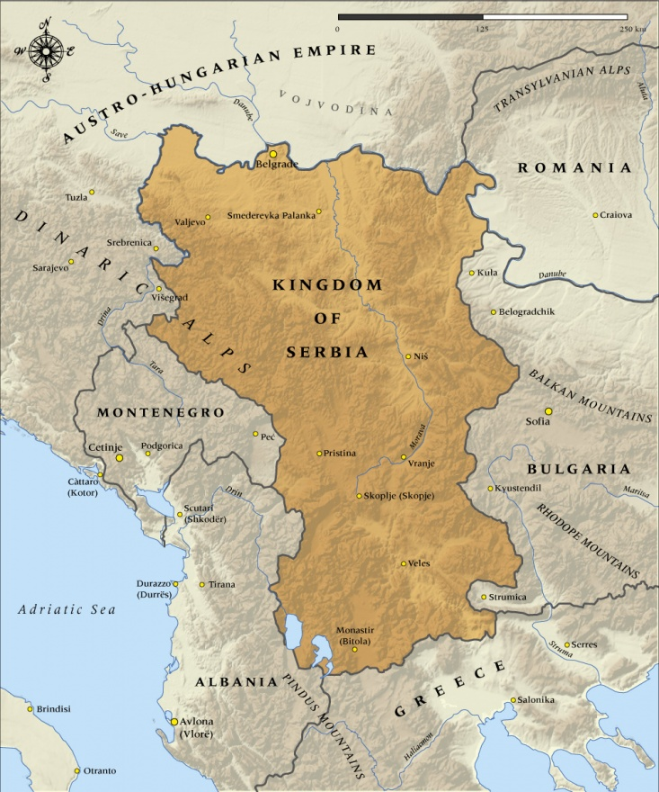
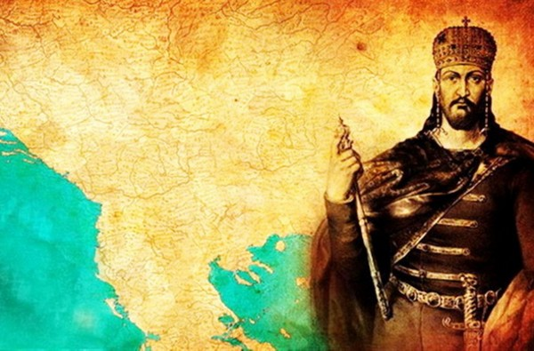
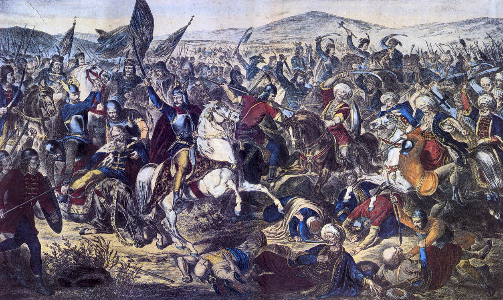
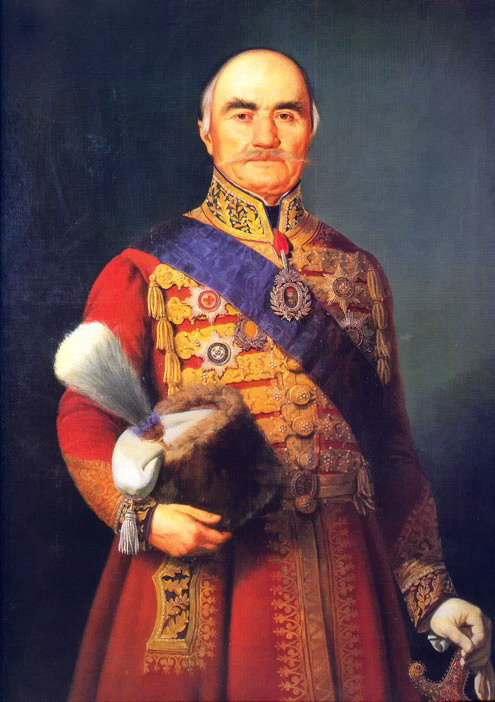

Imagine a country smaller than Maine, in the middle of the Balkans. It wouldn’t seem that a place like that would have much cultural significance on the global scale, yet the relatively small country of Serbia has had an impact that belies its size. Serbia has stood as a stalwart bastion of eastern orthodoxy during a horrendously oppressive four centuries of ottoman rule, their fighting spirit helped cripple the Austro-Hungarian Empire during WW1 and to this day, this resistant and hardened people from Eastern Europe continue to set an example for the world around them.


The Balkans have a very long and colorful history, yet Serbia has stood as a stalwart independent state for quite some time. In 1217, Grand Prince Stefan received a crown and the title of king from the Pope in Rome and only 2 years later he sent an ambassador to Byzantine Patriarchate at Nicaea, requesting that Serbia have its own archbishop and no longer be subject to the one in Macedonia. The patriarch complied appointing Sava Archbishop of Serbia and decreeing that successors should be appointed and confirmed in Serbia itself; the Serbian church thereby became self-governing. Clearly even when surrounded by massive powers, Serbia has sought to remain autonomous and stand on its own two legs. The early Serbian empire reached its height under the reign of Stefan Dušan from 1331 to 1355, incorporating the majority of the Balkans such as Thessaly, Epirus, Macedonia, all of modern Albania and Montenegro. Modern Serbians remember him as “Dušan Silni, or Dušan the Mighty,” and they consider this the golden age of their medieval nation.
This nation would face horrendous oppression from multiple gigantic empires, but they would never lose their identity nor their fighting spirit.
Serbia has a reputation for sticking to their guns, with history backing it up. Ottoman Empire was one of the largest and most long-lasting empires in world history and it spanned 3 continents. It lasted from 1299 to 1922 and occupied the Balkans for much of this time Shortly following Dušan’s successful reign, the gigantic Ottoman empire began its conquest of the Balkans. At first these small states were able to hold their own against the great superpower.
In 1387 or 1388 a combined force of Serbs, Bosnians, and Bulgarians inflicted a heavy defeat on the Ottoman army at Pločnik [a village in southern Serbia], but a turning point came when the Bulgarian tsar Ivan Shishman broke with the alliance of Slavic powers and accepted Ottoman suzerainty.
The Balkans had initially stayed united against such a tremendous foe, but powers like Bulgaria began to make deals for limited sovereignty. The Ottomans began to conquer the entire region. As with the classic hero’s journey, this bright country would have its own ordeal; facing 400 years of dark and terrible oppression. In the battle of Kosovo in 1389, most of the Serbian forces had been defeated, many in Macedonia in 1371, and Prince Lazar moved the capital northwards, away from the Ottomans.

Vast numbers of priests, writers, artists, and architects moved from all over the Balkans to this last refuge of Christianity in the region at the city of Krusevac, Serbia. In 1389, the might of the remaining Serbian army, lead by Prince Lazar met head on with the Turks, and their leader, the third Sultan of the Ottomans- Murad I. This bloody battle left both leaders dead and ultimately marked the end of Serbian autonomy.
The small country was left without an army and occupied by a gigantic empire. Even faced with total defeat, the people fought openly against their rulers until 1459. They had successfully held off the Ottomans for two hundred years and the people held onto their fighting spirit. Refusing to bow down to the Turks, this attitude of identity and nationalism would pass from parents to children even down to present day. Taxes were much higher on Christians and only Muslims could rise in social status during the occupation. Despite pressures, most Serbs stood by Eastern Orthodoxy. The people continued to resist with varying success and even drove the Ottomans out of Northern Serbia with some Austrian support in 1690 and 1787. There are many reasons why the Ottomans didn’t conquer the rest of Europe, however 200 years of blocking the gateway to Europe and 400 years of fierce resistance were almost definitely a large factor in preventing the spread of the Empire. European culture, languages, religion, and advancements were kept safe in part by the unbreakable will of the Serbs.
Eventually the rain did pass, and a combination of Serbian revolts and a weakened Ottoman state lead to a free Serbia in the 19th century. Serbia gained full independence in 1830, after 2 bloody revolts, and Miloš Obrenović was its first sovereign leader in four centuries.

The country prospered and flourished, exporting goods across Europe. Obrenović was pro-Austrian and aligned his country with Vienna, encouraging and facilitating Austrian trade and investment in Serbia. Obrenović exported such a majority of goods and infrastructure through Austria that Serbia had become quite economically dependent on the Empire. Many Serbs were pro-Russian and disliked their ties to Austria, many fellow Slavs were also living in Austro-Hungarian and Ottoman occupied territories, a fact that was ever present in Serbian minds. By 1908 Austria had annexed Bosnia and Herzegovina and a few years later Serbia showed their military might in the Balkan wars, gaining many new people and much land, most notably against their turncoat ally Bulgaria. Serbia had established itself as the most powerful nation in the Balkans and the some of the world’s empires grew nervous.
Amidst these turbulent times, a young Serbian singlehandedly lit a match on arguably the world’s most dangerous tinderbox- the world wars. Austria had begun harassing the small the country and the Serb Gavrilo Princip assassinated Archduke Franz Ferdinand, which the Austro-Hungarian Empire used as an excuse to start the great war. LIt was this event that tipped Europe into a catastrophic war. In the first World War, Serbia, although with no official ties to Princip, fought against the much larger Austro-Hungarian Army and completely destroyed them. Serbia’s role is big in both world wars. Germany had to repeatedly send troops to help their allies and without this resistance, the war could have ended differently. This had a huge toll on Serbia though, with losing nearly half the population of young males in the first world war alone. Staying true to form, Serbia also fought in a no-hope fight against Germany to defend their small country once again in the second world war.
So how do Serbians act today? They hold fast to their values and their religion especially. The endless resistance to mighty superpowers has carried throughout the generations. Serbia has remained the most powerful Balkan nation with much effort, and that attitude holds true to today.